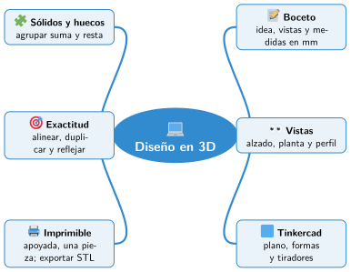

Bloque I · El taller maker
UD02 Diseño en 3D
Sesiones
- Sesión 2.1 Del boceto al modelo
- Sesión 2.2 Primeros pasos en Tinkercad
- Sesión 2.3 Agrupar formas y hacer agujeros
- Sesión 2.4 Alinear y duplicar
- Sesión 2.5 Diseñar una pieza útil y exportarla
Al terminar la unidad
Mapa mental de la unidad

✏️ Repasa la unidad con el mapa: tapa una rama y explica en voz alta lo que pone.